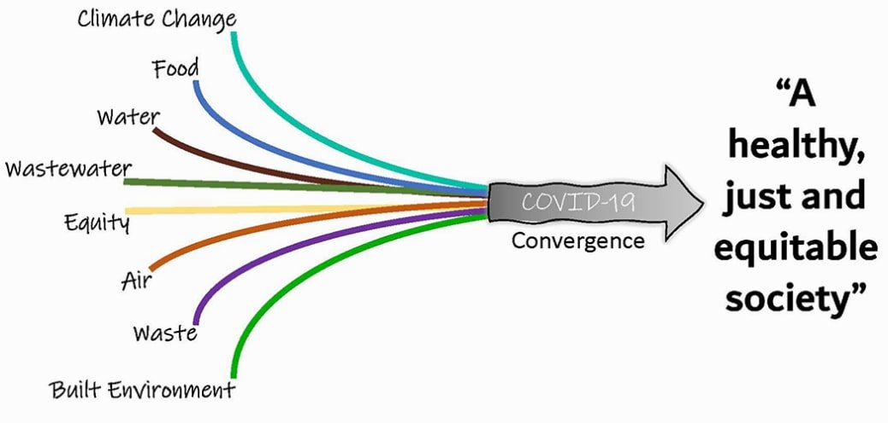

COVID-19 online conference goes beyond social distancing
NSF-funded convergence workshop delves into equity and novel methods
By Miriam Martinez, Psychology Class of 2023 and CITRIS Graphic Designer
The “Converging COVID-19, environment, health, and equity” conference is the collaborative effort of UC Merced Professor of Civil and Environmental Engineering Colleen Naughton, her colleagues from the University of South Florida, and the Association of Environmental Engineering and Science Professors (AEESP). The final presentation and panel discussion concludes on Friday, November 20, but all of the videos are available online on the AEESP YouTube Channel.
Each week researchers and faculty present impacts of COVID-19 on various topics. These topics range from systematic bias and environmental engineering education to designing a future without pollution and waste. Presenters share short yet formal talks and discuss across the panel, answering audience questions. Questions can either be tweeted or sent in Zoom Q&A function where the meeting is hosted.
As a student at UC Merced , I have found the COVID 19 conference incredibly interesting and an enjoyable to experience. I personally learned a lot while watching these conferences and developed a newfound respect for professors and researchers working through the pandemic.
Naughton presented on wastewater and early detections of spikes in COVID-19 through human waste. COVID-19 can be spread before any symptoms arrive making it hard to just track COVID-19 cases through tests, but samples taken from wastewater treatment sites can illustrate the concentration of COVID-19 in areas served by that treatment site. Given how little we know about the broad population, wastewater can be an early indicator.
Naughton and her lab collaborate with over 140 different universities across the world to help track COVID cases in those areas and share information through a dashboard and on twitter handle @COVIDpoops19. The work has helped communities near wastewater treatment sites, universities, and cities and towns as well. This novel detection method could be a safe means of testing populations.
Naughton, who also received CITRIS COVID19 Seed Funding for her work on wastewater treatment, presented in the CITRIS responds to COVID 19 seminar on Nov. 18.
Professor Susan Masten from Michigan State University wanted to ensure her students were doing well and learning throughout the pandemic. She talked about the stress COVID-19 has exacted on students, including challenges with learning. To increase flexibility, she made her lectures prerecorded and uploaded for easy access, but labs were a different story. Hands-on learning in lab courses are normally done on campus with assistance and special equipment. Masten created lab curriculum based on inexpensive and readily available kits. Regardless of where the student lived, they will be able to perform the experiment outside of the lab and without paying a heavy price for expensive equipment. She put her student’s mental health and disposition first and adjusted her curriculum so they could work efficiently. As a student, I appreciate how this professor dedicated herself to make sure students can learn through these tough times.
The work researchers and professors have been doing not only their students but their community. You can watch all the conferences online at AEESP’s YouTube channel and learn more information on the AEESP Convergence website. After watching the seminars, you gain access to quizzes and can obtain a certificate in COVID 19 research. Join the conversation on social media posts on Facebook and Twitter (@AEESProfs).
Naughton concluded the session she moderated with sentiments worth sharing here about the better world we all dream of and are working to create, dedicating the session to her grandmother.
Envision the future without pollution or waste.
Imagine a world without landfills, or litter, or food waste
Where all products and items are designed for disassembly and a sustainable
end of life
A future where we utilize green chemistry instead of toxic and hazardous
chemicals
Imagine a world where fewer people die and suffer from cancer, toxicity and
air pollution
Imagine a world where the environment is clean
Where we are not finding plastics and toxins in the bellies of birds and
fish and other animals
In the context of COVID 19 the necessit of a future without pollution or
waste is ever more apparent
Particularly for Black, Hispanic, Indigenous, and other underserved
communities
That are disproportionately impacted by waste, pollution and COVID 19.
That future is possible.
…
I challenge you to commit even more to make that alternative a reality.